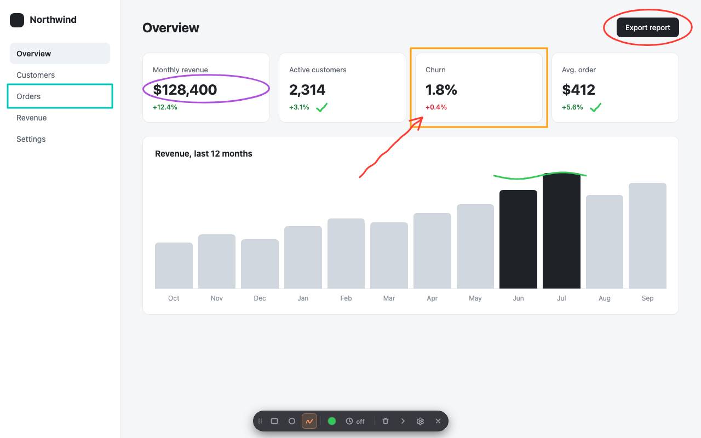
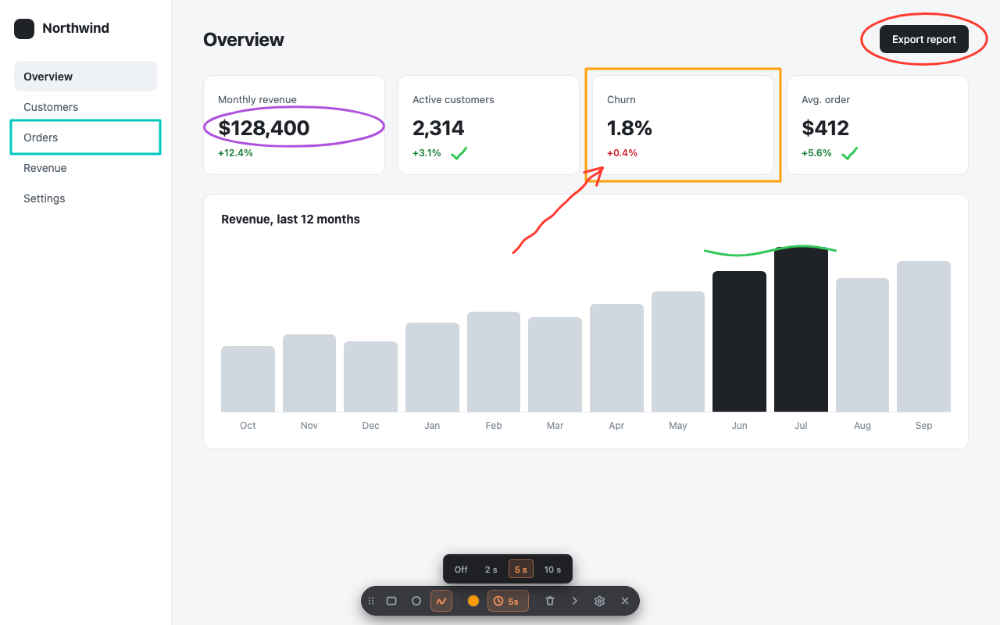

Draw on any web page
while you present.
Showmark is a modern Chrome extension for annotating the page you're sharing: rectangles, circles and freehand highlights that erase themselves, driven from the keyboard. Nothing leaves your browser.
Chrome 125+, Edge, Brave, Arc, Vivaldi and Opera. No account. Press Alt + Shift + S to start.

Built for live demos, not for editing screenshots
Every detail is there so you can keep talking while you point.
Three tools, one key each
Rectangle (R), circle (C) and freehand (F). Hold Shift for perfect squares and circles.
Auto-erase
Shapes un-draw themselves 2, 5 or 10 seconds after you finish them. No cleanup mid-sentence.
Keyboard-first
1 to 6 picks a color, T toggles auto-erase, H collapses the toolbar, Esc clears, Esc Esc exits.
A toolbar that gets out of the way
Compact, dark and translucent. Drag it anywhere or collapse it to a single dot. It remembers where you left it.
Scroll-safe
Annotations stay attached to the content when you scroll, so long pages are fine.
Private by design
Drawings never leave your browser. The page underneath is never modified. Usage statistics have an off switch.
How it works
Three steps, no setup beyond installing.
Launch
Press Alt + Shift + S (⌥ ⇧ S on Mac) on any page, or click the Showmark icon.
Draw
Drag to draw. R, C, F switch tools, 1–6 change color, T turns auto-erase on.
Clear or exit
Esc clears everything. Press Esc twice, or Q, to exit and get the page back untouched.

Shortcuts while drawing
| R C F | Rectangle, circle, freehand |
| Shift + drag | Perfect square or circle |
| 1 – 6 | Preset colors (custom picker in the toolbar) |
| T | Toggle auto-erase |
| H | Collapse or expand the toolbar |
| Esc | Clear everything |
| Esc Esc or Q | Exit Showmark |
All of them except Esc and 1–6 can be remapped in Settings.
Where it earns its place
Any moment where you're talking over a browser window and want people to look at the right thing.
Customer demos and sales calls
Circle the feature you're describing instead of saying "top right, no, a bit lower".
Online classes and workshops
Underline the line of code, the formula or the paragraph while you explain it.
Code and design reviews
Box the component that needs work in the deployed app or the prototype, live.
Support calls
Show the customer exactly which button to press on their own web app.
Frequently asked questions
Short answers to what people ask before installing.
How do I draw on a web page while screen sharing in Chrome?
Install Showmark, press Alt+Shift+S (Option+Shift+S on Mac) on any page and drag to draw. Press R, C or F to switch between rectangle, circle and freehand, Esc to clear, and Esc twice to exit. The drawing overlay sits on top of the page, so anyone watching your shared screen or tab sees it.
Does Showmark work in Google Meet, Zoom or Microsoft Teams calls?
Yes. Showmark draws on the browser tab itself, so it works with any video call or recording tool where you share your screen or a Chrome tab. It does not depend on the call software.
Do the annotations disappear on their own?
Optionally. Turn on auto-erase and each shape un-draws itself 2, 5 or 10 seconds after you finish it, so you never have to clean up mid-demo. With auto-erase off, shapes stay until you press Esc.
Does Showmark save or upload my drawings or the pages I visit?
No. Drawings exist only while the overlay is open and are discarded when you exit, reload or navigate. Page addresses and content are never collected. Showmark counts how its own buttons and shortcuts are used under a random identifier, and you can switch that off in Settings. Privacy policy.
Do annotations stay in place when I scroll?
Yes. Shapes are anchored to the page content, so they move with it when you scroll.
Can I change the keyboard shortcuts?
Yes. Every drawing shortcut can be remapped on the Settings page, and the launch shortcut is managed in chrome://extensions/shortcuts.
Which browsers does Showmark support?
Google Chrome 125 or newer and other Chromium browsers such as Microsoft Edge, Brave, Arc, Vivaldi and Opera. It cannot draw on browser pages such as chrome:// or the Chrome Web Store.
Is Showmark free?
Yes. Showmark is free, has no account and no ads.
Privacy in one paragraph
Your drawings, the pages you visit and anything you type stay in your browser. Preferences are stored on your device. Showmark counts how its own controls are used (which tool, color, shortcut) under a random identifier, with no page addresses or personal data, and you can switch that off in Settings. Full text: privacy policy.